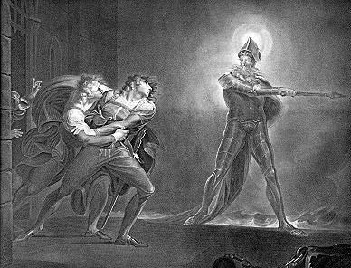
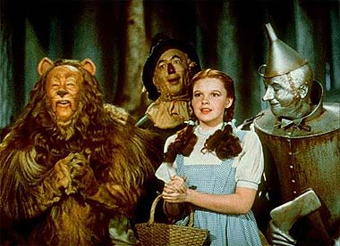
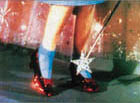

|

Texto de
Susana
Lopes de Alexandria
Histria
junta 'Hamlet' e 'Mgico de Oz'

|
Quem conhece Hamlet, a tragdia escrita pelo dramaturgo e poeta ingls William Shakespeare (1564-1616), logo percebeu que o ttulo do episdio "Remember Me" ("Lembrem-se de Mim") a citao de uma passagem da pea.  A tragdia mostra as dvidas e ansiedades do jovem prncipe Hamlet quando descobre que seu pai, rei na Dinamarca, foi assassinado pelo prprio irmo, Cludio. O assassino, tio de Hamlet, sobe ao trono e casa-se com a viva menos de dois meses aps a morte do rei. Inconformado, Hamlet passa a pea inteira na dvida quanto ao melhor momento para agir em vingana morte do pai. Suas dvidas vm principalmente da maneira como ele confirma a suspeita de que seu tio Cludio assassinara o rei: o prprio fantasma do rei assassinado apareceu e lhe revelou a terrvel verdade - seu irmo Cludio derramara veneno em seu ouvido enquanto ele dormia no jardim. O fantasma chama o filho Hamlet (veja ilustrao) e lhe conta com detalhes como o malvolo Cludio o matara para usurpar-lhe o trono e roubar-lhe a mulher, a rainha Gertrudes, me do jovem prncipe. Agora ele quer que o filho vingue sua morte, matando o tio assassino. Aps uma longa conversa, o fantasma se despede. Ghost Hamlet Fantasma Hamlet Se observarmos bem, a referncia a Hamlet faz sentido no episdio, pois Beverly realmente transforma-se numa espcie de fantasma. O prprio Viajante (Traveller), quando perguntado se a mdica ainda estaria viva, diz que ela ficar viva enquanto acreditar que est viva. Ou seja, a doutora est numa espcie de "limbo", assim como o fantasma do rei. E da mesma forma que Hamlet, Wesley deve apagar tudo do "tabuleiro da memria" e concentrar seus pensamentos apenas em sua me, para poder traz-la de volta. Alm dessa evidente relao entre Fantasma/Hamlet e Beverly/Wesley, o ttulo "Remember Me" tambm tem ligao com os "desaparecidos" da nave, que Beverly promete nunca esquecer. Cada um dos desaparecidos estaria dizendo "remember me" mdica. "Bata os calcanhares trs vezes..." Mas nem s em tragdia inspirou-se o roteirista para escrever a histria de "Remember Me". A situao de Beverly, perdida numa "bolha de dobra" (warp bubble), numa realidade paralela criada por seus prprios pensamentos, soa to surrealista quanto uma fantasia infantil - como a terra encantada de O Mgico de Oz.  Quem viu o filme de 1939, com Judy Garland, imediatamente entendeu a referncia que Beverly Crusher fez clssica histria infantil, quase no final do episdio. Depois de perceber que ela quem est dentro da "bolha", Beverly pergunta a si mesma como voltar Enterprise. "Click my heels together three times and I'm back in Kansas. Can it be that simple?" (Bater um calcanhar no outro trs vezes e estarei de volta ao Kansas. Ser que to simples assim?"). No filme O Mgico de Oz (The Wizard of Oz), Dorothy, a garota interiorana do Kansas, e seu cozinho Tot transportam-se a um lugar encantado durante a passagem de um tornado. Embora o lugar seja lindo e colorido, e uma fada tenha lhe dado de presente sapatos de rubi encantados (foto), a menina deseja voltar para o Kansas. A fada lhe diz para pedir a ajuda do Mgico de Oz, que mora na Cidade de Esmeralda. No caminho, Dorothy conhece um espantalho que quer ter um crebro, um homem de lata que sonha ter um corao (isso no lembra o andride Data?) e um leo medroso que deseja ter coragem. Todos vo procura do Mgico de Oz (foto). Entretanto, h percalos pelo caminho e Dorothy aprisionada por uma bruxa malvada. Mas quando finalmente est prestes a retornar para casa com o Mgico, a bordo de um balo, seu cachorrinho Tot foge e ela corre para peg-lo, e o balo acaba subindo sem ela. Desconsolada, Dorothy recebe novamente a visita da fada, que lhe revela como voltar para casa. "Tap your heels together three times and think to yourself, 'there's no place like home'." (Bata um calcanhar no outro trs vezes e pense, "nenhum lugar melhor do que o lar").  |